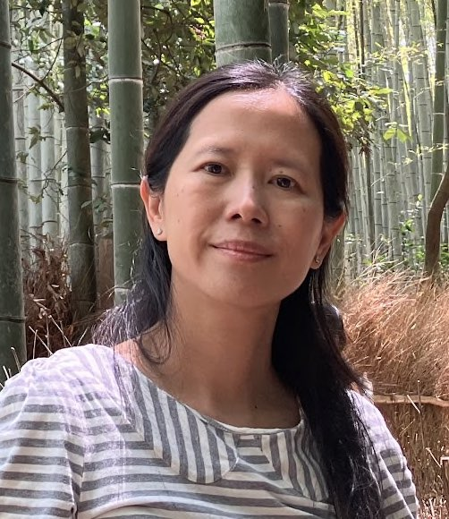

Hui Ling Chou | WDD 130
Hello! My Chinese last name is Hui-Ling, and I am from Taiwan. Chou is my husband's last name, but I used to keep my maiden name "Shen". My English name is Bell. I enjoy listening to music and playing musical instruments. I'm a stay-at-home mom, and I love learning.
I am a member of the church of Jesus Christ of Latter-day Saints. I love to go to our temples to help my ancestors to receive their blessings.
- Taipei Taiwan Temple
- Kaohsiung Taiwan Temple
- Salt Lake Temple
My favorite temple: